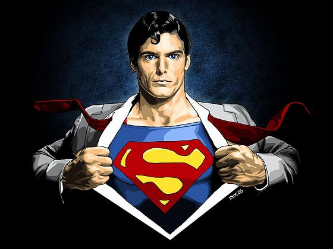

Суперме́н (англ. Superman; «сверхчеловек») — супергерой комиксов, которые выпускаются компанией DC Comics. Он считается иконой американской культуры[3][4][5][6]. Придуманный писателем Джерри Сигелом и художником Джо Шустером и проданный компании Detective Comics (позднее DC Comics), персонаж впервые появился на страницах Action Comics № 1 (июнь 1938 г.), а впоследствии появлялся в различных радиопередачах, телевизионных программах, фильмах, на газетных полосах и в видеоиграх. Своим успехом Супермен помог создать жанр супергероя и занял первенство среди американских комиксов[3]. Персонаж обладает яркой внешностью: красный, синий и жёлтый цвета костюма, в комплекте с плащом и эмблемой в виде треугольного щита с буквой «S» в центре[7][8][9]. В настоящее время эта эмблема используется в различных медиа-отраслях как символ персонажа.

Я вынужден носить очки, иначе
состав ее для суперглаз прозрачен —
желудок, легкие рисуются извне,
как каракатицы, дрожащие на дне,
между костей. Изгой я в этом мире —
«отверженное тело» (тезка в «Лире»),
но и трико надев, кляну судьбу,
свой торс могучий, мышцы, прядь на лбу
иссиня-черную, поскольку мне положен
губительный предел… Теперь изложим.
Нет, речь не о суровых пунктах пакта
меж двух миров, Фантазии и Факта,
мешающего мне, будь он неладен,
наведаться, к примеру, в Берхтесгаден,
и не о миссии моей, но хуже, да, —
несоответствие, трагедия, беда.
Я полон соков, силы небывалой,
и я влюблен, как всякий крепкий малый,
и эту мощь я обуздать обязан,
поскольку брачной ночи предуказан
один исход — сгубив свою жену,
землетрясеньем я отель смету,
ряд пальм, электростанцию, шоссе,
армейских тягачей пять-шесть иль все.